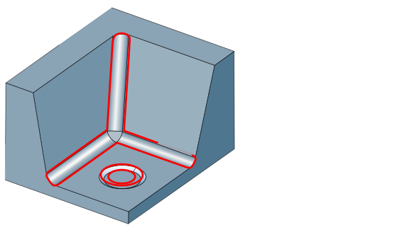

Rest material boundary
Create rest material areas to increase flexibility when machining rest material. The boundaries created can be used in all cycles that support boundaries.
Based on the definition of a reference tool, the theoretical rest material is calculated in the defined milling area and provided in the form of boundaries. The boundaries are calculated so that they relate to the center point of the selected machining tool, allowing flexible use for different orientations.
|  |
Selection
|
|
Click the respective icon to select or redefine theMilling area and Frame for creating the rest material boundary. |
||
|
|
|||
|
|
Click the respective icon Top, Bottom, and Boundary to manually limit the search area for the rest material to be detected for large components. Selected: The number of selected boundaries is displayed. |


Tools
Reference tool: The Diameter of the reference tool is used to calculate the rest material areas to still be machined.
Machining tool: The creation of the boundaries takes into account the Diameter of the selected machining tool.
Allowance in job: Enter the allowance to be used in the job for rest machining and to be taken into account when creating the boundaries.
Result
|
|
|
Create CAD curves: Click the respective icon to select Color and Layer. |
||
|
If the function Create automatic layer is activated, the layer name is created automatically based on the name and diameter of the reference and machining tool. Example: Reference tool diameter = 10, machining tool diameter = 6. Layername: Ref. Ø = 10 // Mach. Ø = 6. If the Create automatic layer function is not activated, enter the layer name directly in the input field (to the right of the layer icon |
||||